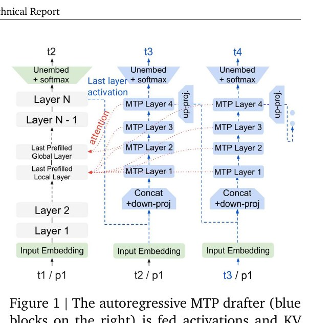
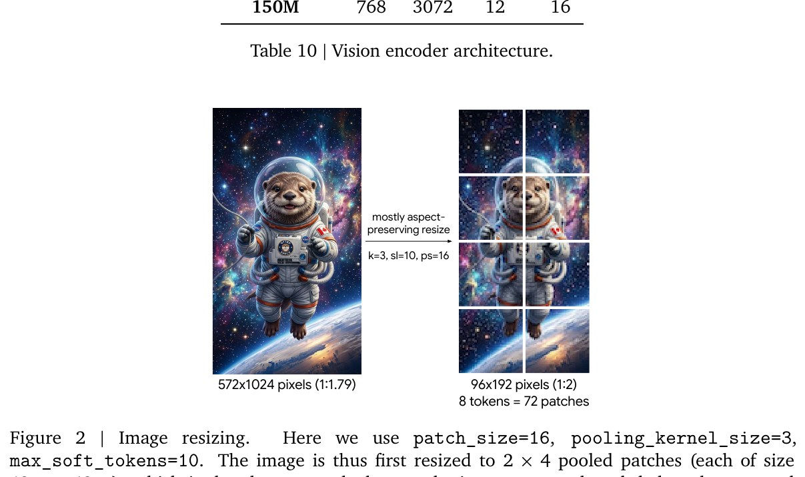

速览
五条要点
31B 是 Arena 上最强的稠密开源模型
Elo 1451 ±8（第 43），26B-A4B 为 1438 ±8（第 61），Gemma 3 27B 只有 1366（第 157）表 4。前面的开源模型全是 744B–1.6T 的 MoE。
推理类基准跨代大涨
31B 对 Gemma 3 27B：AIME 2026 89.2 vs 20.8，LiveCodeBench v6 80.0 vs 29.1，Codeforces Elo 2150 vs 110表 5。但 Gemma 4 开了 thinking，Gemma 3 没开，差距里有一部分来自 thinking 本身。
12B 去掉了编码器
用一个 35M 参数的 matmul 替代 550M ViT，音频直接把 16kHz 下 40ms 片段（640 维）投影进 LLM§2.3。高分辨率下 InfographicVQA 达 88.4，但降到 280 token 后掉到 58.7表 6 · 表 12，比其他尺寸都掉得多。
全链路在省显存
全局层 K=V + p-RoPE（p=0.25）使全局 KV cache 减 37.5%§2；31B 权重从 bf16 的 64.0 Gb 量化到 Q4_0 的 19.2 Gb表 3；音频编码器磁盘占用 390 MB → 87 MB§2.5。
数据几乎是黑箱
预训练只说「与 Gemma 3 类似」，写了模态和截止日期§2.4；token 量、配比、caption 方式、合成数据原文未披露。后训练只列了过滤规则§3。
架构：同一套解码器，三种多模态接入
骨干都是 decoder-only Transformer，pre-norm + post-norm 用 RMSNorm，加 QKNorm§2。原文只给了 MTP drafter 一张架构图（图 1），没有整体架构图。各尺寸的不同主要在多模态怎么接进来。
相对 Gemma 3 / 3n 的改动
- 长上下文省显存：局部滑窗:全局注意力保持 5:1（E2B 为 4:1）§2。新增两项：全局层直接把 keys 当 values 用（K=V，E2B/E4B 除外），全局层用 p-RoPE（p=0.25），局部层用普通 RoPE；两项合起来让全局 KV cache 减少 37.5%§2（引言里写的是「最多」37.5%§1）。RoPE 基频：全局 1M，局部 10k§2。
- 端侧模型：E2B/E4B 沿用 Gemma 3n 的逐层 embedding（per-layer embeddings），所以有效参数是 2.3B / 4.5B，总参 5B / 8B；另做跨层 KV 共享，比例 20/35（E2B）和 18/42（E4B）§2。
- 视觉编码器：E2B/E4B 用 150M ViT，26B-A4B/31B 用 550M ViT，patch 均为 16；支持可变长宽比，同时用轴向 2D-RoPE（非因果注意力）和 2D 绝对位置编码；图像 token 上限 Nmax 可选 70 / 140 / 280 / 560 / 1120§2.1。
- 音频编码器：E2B/E4B 用 305M USM conformer，比 Gemma 3n 的 680M 少 55%；不做向量量化，LLM 直接读连续表示；预训练期间冻结§2.2。
- 12B encoder-free：见上图第三行§2.3。引言说这样能省掉独立编码器、减少显存碎片§1，但没有给出量化收益。
注意力层排布（非 E2B） §2
局部层 RoPE 基频 10k，全局层 1M。E2B 是 4 局部 : 1 全局，且 E2B/E4B 的全局层不做 K=V§2。原文没写滑窗大小。
参数拆分
| 模型 | 音频编码器 | 视觉编码器 | Embedder | Einsums（主干） | Drafter |
|---|---|---|---|---|---|
| E2B | 305M | 150M | 400M + 2,340M | 1,870M | 76M |
| E4B | 305M | 150M | 670M + 2,820M | 3,940M | 77M |
| 12B | – | – | 1,000M | 10,890M | 400M |
| 26B-A4B* | – | 550M | 740M | 24,500M / 2,800M（激活） | 430M |
| 31B | – | 550M | 1,410M | 29,290M | 500M |
来源：表 1。* 表示 MoE，按激活参数命名。E2B/E4B 的 embedder 第二项是逐层 embedding。按表加总：E2B 400M+1,870M≈2.3B 有效，全部相加约 5.07B；E4B 670M+3,940M≈4.6B 有效，全部约 7.9B 推算，与正文的 2.3B/5B、4.5B/8B 基本一致。
MTP drafter：给投机解码配的小头

- 输入：主模型上一步的最后一层激活和 token embedding，拼接后经 down-proj 送入 MTP 头§2.6 · 图 1。
- 结构：有独立 embedder，加一个 4 层 Transformer 块（3 层局部 + 1 层全局），对主模型的 KV 做 cross-attention，因此不需要单独做 MTP prefill，草稿长度也不受限§2.6。
- 宽度：E2B/E4B 为 256，26B-A4B/31B 为 1024§2.6；12B 原文没写。各尺寸 drafter 参数 76M–500M表 1。
- 端侧提速：E2B/E4B 的 drafter 不投影到整个词表，而是在 token 聚类上做 top-k，最后一层 matmul 从 d×262,000 降到 d×4096，原文说接受率「相近」§2.6，没给具体接受率或加速比原文未披露。
量化（QAT）与显存
发布两套权重格式：mobile 量化（按通道低比特权重，int2/int4 混合，激活 int8）和 Q4_0（按块量化）§2.5。另外在每个 block 加一个标量缩放，把激活范围压进 fp16，保证 fp16 推理稳定§2.5。编码器也做了 QAT：150M 图像编码器 W8A8 后前向显存从 400 MB 降到 200 MB，端侧延迟比 Gemma 3n 低 44%；音频编码器激活 8 bit、权重按层簇取 {2,4,8} bit，磁盘占用 390 MB → 87 MB（−78%）§2.5。
| 模型 | bf16 | 量化后 | + int8 KV（32k） | 量化 / bf16 |
|---|---|---|---|---|
| E2B | 4.6 | 0.8† | +0.05 | 17% |
| E4B | 9.0 | 2.3† | +0.14 | 26% |
| 12B | 24.0 | 7.65‡ | +0.28 | 32% |
| 26B-A4B* | 52.0 / 7.6 | 16.2 / 2.8‡ | +0.28 | 31% |
| 31B | 64.0 | 19.2‡ | +1.10 | 30% |
来源：表 3，仅文本，单位按原文写作 Gb。† = mobile 量化，‡ = Q4_0；26B-A4B 列出总参 / 激活两组数。最后一列为本页自算 推算。
数据：只披露了「做了什么」，没有「做了多少」
预训练写的是「与 Gemma 3 类似」§2.4；后训练写的是「与 Gemma 3 类似，主要区别是加入 thinking」§3。下面把全文能找到的数据信息都收在一起。
已披露规模
| 项目 | 原文给出的内容 | 来源 |
|---|---|---|
| 预训练模态 | 网页文档、代码、图像、音频（音频只给 E2B、E4B、12B） | §2.4 |
| 知识截止 | 2025 年 1 月 | §2.4 |
| 词表 | 262k，与 Gemini 相同的 SentencePiece | §2.4 · 表 1 |
| 预训练 token 总量 / 各尺寸 token 数 | 原文未披露 | – |
| 文本 / 代码 / 图像 / 音频配比 | 原文未披露（所以本页不画配比条） | – |
| 图文对数量、音频时长 | 原文未披露 | – |
| 图像 caption / 标注方式 | 原文未披露 | – |
| 合成数据 / 蒸馏数据 | 原文未披露 | – |
| 后训练数据量、SFT 与 RL 比例 | 原文未披露 | – |
| 过滤带来的提升 | 只给定性结论：加入归因 / hedging / 拒答子集后事实性指标提升，其他指标不降；没有数字 | §3 |
图像预处理：token 预算决定分辨率
这是全文唯一写到算法级别的数据处理步骤。设 patch p=16、池化核 k=3，则每个 soft token 对应 m=k·p=48 px 见方；目标面积为 Nmax·m²，按原图长宽比算出理想尺寸后，两边各自向下取整到 48 的倍数，再做双三次缩放算法 1。所以实际 token 数不超过 Nmax，长宽比只是「基本保持」。

换算成像素：Nmax=1120 约对应 1120×48² ≈ 2.58 MP，280 约 0.65 MP，70 约 0.16 MP 推算。12B 的 48×48×3 输入块和这个 48px 池化块尺寸相同，所以同一 token 预算下，两条路径看到的像素量一样 推算。
视觉编码器规格（表 10）展开
| 总参 | dmodel | dMLP | Nheads | Nlayers |
|---|---|---|---|---|
| 550M | 1152 | 4304 | 16 | 27 |
| 150M | 768 | 3072 | 12 | 16 |
来源：表 10。说明：PDF 文本抽取的算法 1 第 3 行把缩放因子写成 f ← T/(H·W)；按 f = T/√(H·W) 复算才能得到图 2 的 96×192 推算，应是抽取时丢了根号，以 PDF 为准。
后训练数据格式
PT 和 IT 共用一个 tokenizer，部分 control token 专供 IT 格式用。PT 模型生成结束输出 <eos>，IT 模型输出 <turn|>，所以微调哪一种都要加对应的结束符§3。在 system turn 开头加 <|think|> 打开 thinking表 11。
节选自表 11。[BOS] 要在 tokenize 之后显式加上（或用 add_bos=True），不要把字符串 "[BOS]" 拿去 tokenize。
训练配方
原文没有学习率、batch、步数、token 数、各阶段长度，也没有单独的 RL 章节原文未披露。能确认的只有下面这些。
预训练
- 做法「与 Gemma 3 类似」§2.4
- 视觉、音频编码器预训练中冻结§2.2
- 12B 从零训练，无编码器§2.3
- 知识截止 2025-01§2.4
指令微调 + thinking
- 后训练「与 Gemma 3 类似」§3
- 主要新增：thinking 模式，回答前先输出推理轨迹§3
- 数据过滤 + 归因 / hedging / 拒答子集§3
- SFT、RL 的具体做法原文未披露
随模型发布的附加件
- MTP drafter 与模型一起训练§2.6（在哪个阶段、用什么损失原文未披露）
- QAT：mobile（int2/int4 权重 + int8 激活）与 Q4_0§2.5
- 编码器 QAT：图像 W8A8，音频按层 {2,4,8} bit 权重§2.5
示意：三栏是本页按内容做的分组，原文只明确 PT → IT 的先后，没有说 QAT、MTP 训练插在哪一步。
算力与并行
| 模型 | TPU | 芯片数 | Data | Seq | Replica |
|---|---|---|---|---|---|
| E2B | v6e | 4,096 | 16 | 8 | 32 |
| E4B | v6e | 6,144 | 16 | 16 | 24 |
| 12B | v4 | 12,288 | 16 | 16 | 48 |
| 26B-A4B* | v6e | 6,144 | 16 | 16 | 24 |
| 31B | v6e | 10,240 | 16 | 16 | 40 |
来源：表 2，按 data / sequence / replica 三个维度切分。
- 优化器状态用 ZeRO-3 实现做切分；多 pod 训练用 Pathways 在数据中心网络上做 data replica 归约；JAX 单控制器 + GSPMD 切分器 + MegaScale XLA 编译器§2.7。
- 较大模型用 Slice-Granularity Elasticity：局部故障时用更少的 TPU slice 继续训练，中断时间从「好几分钟」降到「几秒」§2.7。
- 12B 用的芯片最多（12,288 片 TPUv4），比 31B 还多，原文没解释原因表 2。
评测
静态基准里只拿 Gemma 3 27B 作对照，没有和其他厂商的开源模型比；横向比较只有 Arena 人评（表 4）。另外要注意：Gemma 4 开 thinking，Gemma 3 27B 不开表 5 · 表 6。
文本与推理（表 5，节选）
| 基准 | 31B | 26B-A4B | 12B | E4B | E2B | Gemma 3 27B non-thinking |
|---|---|---|---|---|---|---|
| MMLU Pro | 85.2 | 82.6 | 77.2 | 69.4 | 60.0 | 67.6 |
| AIME 2026 no tools | 89.2 | 88.3 | 77.5 | 42.5 | 37.5 | 20.8 |
| LiveCodeBench v6 | 80.0 | 77.1 | 72.0 | 52.0 | 44.0 | 29.1 |
| Codeforces Elo | 2150 | 1718 | 1659 | 940 | 633 | 110 |
| GPQA Diamond | 84.3 | 82.3 | 78.8 | 58.6 | 43.4 | 42.4 |
| HLE / with search | 19.5 / 26.5 | 8.7 / 17.2 | 5.2 / – | – | – | – |
| IFBench | 76.0 | 72.0 | 74.0 | 44.0 | 38.0 | 32.0 |
| MRCR v2 8-needle, 128k | 66.4 | 44.1 | 43.4 | 25.4 | 19.1 | 13.5 |
| Tau2 – airline | 75.0 | 76.0 | 75.0 | 52.0 | 31.0 | 39.0 |
| Terminal Bench Hard | 36.0 | 14.0 | 18.0 | 8.0 | 3.0 | 4.0 |
表 5 全部 17 项展开
| 基准 | 31B | 26B-A4B | 12B | E4B | E2B | Gemma 3 27B |
|---|---|---|---|---|---|---|
| MMLU Pro | 85.2 | 82.6 | 77.2 | 69.4 | 60.0 | 67.6 |
| AIME 2026 no tools | 89.2 | 88.3 | 77.5 | 42.5 | 37.5 | 20.8 |
| LiveCodeBench v6 | 80.0 | 77.1 | 72.0 | 52.0 | 44.0 | 29.1 |
| Codeforces Elo | 2150 | 1718 | 1659 | 940 | 633 | 110 |
| SciCode | 43.0 | 40.0 | 38.0 | 24.0 | 21.0 | 21.0 |
| GPQA Diamond | 84.3 | 82.3 | 78.8 | 58.6 | 43.4 | 42.4 |
| Big Bench Extra Hard micro avg | 74.4 | 64.8 | 53.0 | 33.1 | 21.9 | 19.3 |
| HLE | 19.5 | 8.7 | 5.2 | – | – | – |
| HLE with search | 26.5 | 17.2 | – | – | – | – |
| IFBench | 76.0 | 72.0 | 74.0 | 44.0 | 38.0 | 32.0 |
| IFEval | 98.9 | 98.5 | 97.2 | 96.7 | 94.6 | 90.4 |
| MMMLU | 88.4 | 86.3 | 83.4 | 76.6 | 67.4 | 70.7 |
| MRCR v2 8-needle, 128k | 66.4 | 44.1 | 43.4 | 25.4 | 19.1 | 13.5 |
| Terminal Bench Hard | 36.0 | 14.0 | 18.0 | 8.0 | 3.0 | 4.0 |
| Tau2 – airline | 75.0 | 76.0 | 75.0 | 52.0 | 31.0 | 39.0 |
| Tau2 – retail | 86.4 | 85.5 | 77.6 | 67.1 | 34.6 | 6.6 |
| Tau2 – telecom | 69.3 | 43.0 | 54.4 | 18.4 | 19.7 | 3.1 |
视觉：分辨率预算的影响比尺寸还大
表 6 用最高分辨率（1120 token），附录表 12 给了 280 token 的结果。两张表放在一起看，最值得注意的是文档类任务。
| 基准（1120 → 280 token） | 31B | 26B-A4B | 12B | E4B | E2B | Gemma 3 27B |
|---|---|---|---|---|---|---|
| MMMU Pro | 76.9 → 75.8 | 73.8 → 73.2 | 69.1 → 67.7 | 52.6 → 51.4 | 44.2 → 43.2 | 49.7 |
| MATH-Vision | 85.6 → 83.4 | 82.4 → 80.3 | 79.7 → 76.7 | 59.5 → 59.2 | 52.4 → 53.0 | 46.0 |
| MedXPertQA MM | 61.3 → 60.7 | 58.1 → 55.7 | 48.7 → 47.4 | 28.7 → 28.7 | 23.5 → 22.5 | – |
| InfographicVQA | 92.0 → 82.8 | 89.3 → 77.8 | 88.4 → 58.7 | 70.0 → 54.8 | 63.9 → 44.6 | 70.6 |
| OmniDocBench 1.5 ↓ | 0.131 → 0.201 | 0.149 → 0.269 | 0.164 → 0.408 | 0.181 → 0.307 | 0.290 → 0.496 | 0.365 |
来源：表 6（1120 token）、表 12（280 token），均为 thinking。↓ 表示越低越好。Gemma 3 27B 只出现在表 6，non-thinking，用 Pan & Scan。
- 推理类（MMMU Pro、MATH-Vision、MedXPertQA MM）从 1120 降到 280，各尺寸只掉 0–3 分；E2B 的 MATH-Vision 反而从 52.4 升到 53.0表 6 · 表 12。
- 文档类变化很大：InfographicVQA 上 12B 掉 29.7 分，31B 掉 9.2 分推算；OmniDocBench 上 12B 的误差从 0.164 涨到 0.408，比 E4B 的 0.307 还差表 12。
- 也就是说，无编码器的 12B 在高分辨率下接近 26B-A4B，低分辨率下处理文档明显吃亏。原文没有讨论这个现象。
人评：Arena Text（表 4，节选）
| 模型 | 排名 | Elo | 95% CI | 开源 | 类型 | 总参 / 激活 |
|---|---|---|---|---|---|---|
| Claude Fable 5（闭源，作参照） | 1 | 1508 | ±9 | no | – | – |
| GLM 5.1 | 15 | 1475 | ±6 | yes | MoE | 744B / 40B |
| Kimi K2.6 | 34 | 1460 | ±5 | yes | MoE | 1T / 32B |
| DeepSeek V4 Pro | 38 | 1456 | ±5 | yes | MoE | 1.6T / 49B |
| Gemma 4 31B | 43 | 1451 | ±8 | yes | Dense | 31B |
| Kimi K2.5 Thinking | 44 | 1450 | ±4 | yes | MoE | 1T / 32B |
| Qwen 3.5 397B-A17B | 57 | 1444 | ±4 | yes | MoE | 397B / 17B |
| Gemma 4 26B-A4B | 61 | 1438 | ±8 | yes | MoE | 26B / 4B |
| DeepSeek V4 Flash Thinking | 63 | 1436 | ±5 | yes | MoE | 284B / 13B |
| Gemma 3 27B | 157 | 1366 | ±4 | yes | Dense | 27B |
来源：表 4，截至 2026-06-19，人工盲评的 side-by-side 结果换算成 Elo。注意 31B 与第 44 名的差距只有 1 分，置信区间重叠。
长上下文（表 9，无 thinking）展开
| 基准 · 指标 · 长度 | 31B | 26B-A4B | 12B | E4B | E2B | Gemma 3 27B |
|---|---|---|---|---|---|---|
| RULER · Acc · 32k | 96.8 | 97.3 | 96.4 | 95.2 | 83.0 | 91.1 |
| RULER · Acc · 128k | 96.4 | 89.8 | 91.2 | 86.6 | 70.4 | 66.0 |
| LOFT Text Retrieval · Recall@k · 128k | 79.5 | 66.3 | 66.4 | 58.5 | 50.5 | 8.6 |
| GraphWalks · F1 · <128k | 82.3 | 72.6 | 71.0 | 50.9 | 4.1 | 32.8 |
| MTOB eng→kgv · chrF · ~128k（半本书） | 52.9 | 50.0 | 45.1 | 37.8 | 15.4 | 41.0 |
| MTOB eng→kgv · chrF · ~256k（整本书） | 54.3 | 48.9 | 41.9 | – | – | – |
| MTOB kgv→eng · chrF · ~128k（半本书） | 48.6 | 45.0 | 37.3 | 34.6 | 28.2 | 31.2 |
| MTOB kgv→eng · chrF · ~256k（整本书） | 46.2 | 42.7 | 32.9 | – | – | – |
原文没写最大上下文长度；表里最长的评测是 MTOB 整本书，约 256k。
音频（表 7 · 表 8）展开
E2B/E4B 对比同尺寸的 Gemma 3n：CoVoST 平均 BLEU 35.4 vs 31.6、38.2 vs 34.7；FLEURS 平均 WER 0.090 vs 0.108、0.075 vs 0.085表 7。原文换算为翻译相对提升 12% / 10%、转写相对提升 17% / 12%，同时音频编码器磁盘占用减少 78%表 7 题注；本页复算一致 推算。
| FLEURS WER ↓（* = CER） | en | ko* | ja* | de | fr | es | it | pt-br | ru | ar | hi | zh* |
|---|---|---|---|---|---|---|---|---|---|---|---|---|
| Gemma 4 E4B | 0.065 | 0.053 | 0.078 | 0.061 | 0.080 | 0.035 | 0.032 | 0.046 | 0.068 | 0.162 | 0.086 | 0.136 |
| Gemma 4 12B（无编码器） | 0.063 | 0.057 | 0.080 | 0.053 | 0.081 | 0.038 | 0.030 | 0.047 | 0.068 | 0.070 | – | – |
| Gemma 3n E4B | 0.066 | 0.073 | 0.111 | 0.065 | 0.098 | 0.041 | 0.034 | 0.053 | 0.087 | 0.101 | 0.089 | 0.203 |
| CoVoST XX→EN BLEU ↑ | ja | de | fr | es | it | ru | zh |
|---|---|---|---|---|---|---|---|
| Gemma 4 E4B | 25.5 | 42.0 | 41.0 | 44.8 | 43.0 | 49.4 | 21.9 |
| Gemma 4 12B（无编码器） | 26.4 | 41.9 | 42.5 | 44.6 | 43.3 | 50.5 | – |
| Gemma 3n E4B | 22.3 | 39.1 | 38.4 | 41.8 | 40.4 | 43.7 | 17.4 |
来源：表 7（E2B/E4B/3n，CoVoST 用「先转写再翻译」的 S2TT 提示）与表 8（12B，只报「支持的语言」，不含 hi / zh，也没有平均值，所以不能直接和表 7 的 AVG 比）。表 7 列顺序在本页有调整。
安全评测：原文说各类内容安全相较前代 Gemma 都有大幅改进、不合理拒答保持在低水平，测试时不开安全过滤§5.3，但没给任何数字原文未披露。
新在哪
thinking 模式、QAT、5:1 局部/全局注意力在业内或前代 Gemma 已有，这里不算新点。
12B 无编码器的统一多模态
图像用 48×48×3 patch 经 35M matmul 加 2D 坐标位置编码，音频直接用 640 维 40ms 原始片段，都投影进 LLM，模型从零训练§2.3。高分辨率视觉分数接近 26B-A4B（InfographicVQA 88.4 vs 89.3）表 6，音频与带 305M 编码器的 E4B 处在同一水平表 7 · 表 8。
可核对：表 1 中 12B 的编码器两列为「–」。没有「12B + 编码器」的对照实验。
全局层 K=V + p-RoPE
全局注意力层把 keys 直接当 values 用，并用 p=0.25 的 p-RoPE，全局 KV cache 减 37.5%§2。
可核对：引用了 2026 年的 QKV 变体研究（Kayyam 等）。37.5% 怎么算出来的、对质量有没有影响，原文都没说。
读主模型 KV 的自回归 MTP drafter
4 层小 Transformer 对主模型 KV 做 cross-attention，省掉 MTP prefill，草稿长度不限；端侧版本用 token 聚类 top-k 把输出投影从 d×262,000 缩到 d×4096§2.6 · 图 1。
可核对：表 1 列出了各尺寸 drafter 参数。没有接受率和加速比数字。
端侧音频编码器更小反而更准
USM conformer 从 680M 减到 305M，量化后从 390 MB 降到 87 MB；ASR 和语音翻译仍比 Gemma 3n 更好§2.2 · 表 7。
可核对：表 7 逐语言给出；但对比对象 Gemma 3n 的 LLM 主干也不同，提升不能全部归功于编码器。
对图像编辑数据、评测、caption 的启示
Gemma 4 不是生成模型，但它的 VLM 很可能被拿来当 captioner 或评测裁判。每条先写论文怎么做，再给一条迁移建议（不是论文内容）。
C1分辨率预算要写进协议
论文：同一模型在 1120 与 280 token 下，InfographicVQA 最多差 29.7 分（12B），推理类基准只差 0–3 分表 6 · 表 12。
迁移建议，不是论文内容：用 Gemma 4 给编辑对写 caption、或判文字渲染 / 小目标编辑时，固定用最高档 Nmax，并把档位写进 caption 元数据；只判风格、构图等全局属性时可以降档省成本。不同档位跑出来的 caption 不要混在同一个训练集版本里。
C2按 token 预算向下取整的缩放
论文：先按 Nmax 和原图长宽比算目标面积，两边向下取整到 48 px 的倍数，再做双三次缩放，长宽比「基本保持」算法 1 · 图 2。
迁移建议，不是论文内容：编辑数据的 src/tgt 送进 VLM 前，用同一套缩放函数并记录实际尺寸。572×1024 会变成 96×192（1:1.79 → 1:2），裁边细节可能丢；判「边缘区域有没有被改」这类问题时，要先确认那块区域缩放后还在。
C3鼓励 hedging 和拒答的数据
论文：后训练加入鼓励上下文归因、表达不确定、拒答的子集，事实性指标提升，其他指标不降（无具体数字）§3。
迁移建议，不是论文内容：训练 caption 模型时，混入「看不清就不写」「属性不确定就标 uncertain」的样本，并在评测里单独统计幻觉属性率（caption 提到但图里没有的物体或属性），不要只看 caption 的覆盖度。
D1先去污染再训练
论文：预训练数据针对评测基准去污染，并降低复述风险§2.4。
迁移建议，不是论文内容：编辑训练集冻结版本前，用感知哈希 + 图像 embedding 近邻，对自有 benchmark 的 src 图和指令做查重，命中的整对剔除；查重阈值和命中数随数据版本一起记录。
D2后训练按「错误类型」过滤
论文：后训练数据去掉个人信息、不安全 / 有毒输出、错误自我身份认知、重复样本§3。
迁移建议，不是论文内容：编辑对也按可枚举的错误类型列过滤器，比如指令提到 src 里没有的物体、tgt 改了指令外的区域、src≈tgt 的空编辑、同一 src 的近重复对；每类单独统计剔除率，比一个笼统的质量分更好排查。
D3格式 token 与结束符写死
论文：PT 用 <eos>、IT 用 <turn|> 结束，微调必须加对应结束符；[BOS] 要在 tokenize 之后加§3 · 表 11。
迁移建议，不是论文内容：如果拿 Gemma 4 微调成编辑指令改写器或结构化 caption 模型，先用一条样本核对 token 序列（BOS 只有一个、结束符正确、thinking 开关符合预期），再批量训练，避免整批数据格式出错。
E1对照组设置要一致
论文：Gemma 4 开 thinking、1120 token；Gemma 3 27B 不开 thinking、用 Pan & Scan表 5 · 表 6。正文说 E4B 在所有视觉评测上不低于 Gemma 3 27B，但 InfographicVQA 是 70.0 vs 70.6。
迁移建议，不是论文内容：编辑评测里每个对比组都固定分辨率、采样步数、VLM 裁判版本和提示词；写结论前用脚本对照表格逐条核对「全面超过」这类说法。
E2人评要带 CI 和日期
论文：Arena 给出 Elo、95% CI 和截止日期 2026-06-19表 4。31B（1451 ±8）和第 44 名（1450 ±4）差 1 分。
迁移建议，不是论文内容：GSB 盲测出结论时同时报置信区间和样本数；区间重叠就写「持平」，不要按名次排先后。报告里写明标注日期和对比模型版本。
E3按能力维度拆开看
论文：降分辨率对推理类几乎无影响，对文档类影响很大表 6 · 表 12；只看平均分会把这个差别抹掉。
迁移建议，不是论文内容：编辑 benchmark 至少按「文字编辑 / 局部替换 / 全局风格 / 保持一致性」分桶报分，并对每桶做一次分辨率敏感性测试，找出哪些桶需要高分辨率输入。
局限与存疑
- 数据几乎没披露。预训练 token 数、模态配比、图文对来源与 caption 方式、合成数据、后训练数据量都没写；只有模态列表、截止日期和过滤类别§2.4 · §3。
- 后训练和 RL 没展开。只说「与 Gemma 3 类似」，加了 thinking；thinking 怎么训、有没有 RL、奖励怎么设计，原文都没写§3。
- 关键设计缺消融。K=V、p-RoPE、12B 去编码器、MTP 聚类 top-k、hedging 数据都没有对照实验；MTP 只说接受率「相近」，没给数字§2 · §2.6 · §3。
- 对照口径不一。表 5/6 中 Gemma 4 开 thinking，Gemma 3 27B 不开；视觉上一边用 1120 token，一边用 Pan & Scan；表 9 又不开 thinking。静态基准没有和其他厂商的模型比。
- 正文与表格有出入。（1）正文说 E4B 在所有视觉评测上不低于 Gemma 3 27B§4.2，但 InfographicVQA 是 70.0 vs 70.6表 6。（2）正文说长上下文 E4B 超过 Gemma 3 27B，但 MTOB eng→kgv 半本书是 37.8 vs 41.0表 9。（3）「E2B 参数少 10 倍、大致追平 Gemma 3 27B」§4.2：E2B 在 MMLU Pro（60.0 vs 67.6）、MMMLU、Tau2-airline 上更低表 5；E2B 总参 5B，只有有效参数 2.3B 才接近 10 倍差距。（4）结论写「用 QAT 提升计算效率、用 MTP 提升显存效率」§6，和引言的说法正好对调§1。
- 参数口径对不上。正文写 26B-A4B 激活 3.8B§1，表 1 拆项是 embedder 740M + 激活 einsum 2,800M + 视觉 550M，按哪种组合都凑不出 3.8B 推算；表 4 又写成「26B / 4B」。
- 12B 音频结果不能和端侧模型直接比。表 8 只报「支持的语言」，没有 hi / zh，也没有平均值；ar 的 WER 是 0.070，而 E4B 是 0.162，但原文没分析差距来源表 7 · 表 8。
- Arena 名次是快照。截至 2026-06-19，31B 与相邻模型 CI 重叠，「稠密第一」的说法依赖榜单当时的构成表 4。
- 安全评测没有数字。只有「大幅改进」「违规极少」等定性描述§5.3。
图表索引
| 编号 | 内容 | 本页位置 |
|---|---|---|
| 图 1 | 自回归 MTP drafter 架构（原文第 3 页右栏）· figures/fig1.jpg | 架构 |
| 图 2 | 附录：图像按 token 预算缩放示例 · figures/fig2.jpg | 数据 |
| 首页截图 | figures/fig0-teaser.jpg 是首页引言的文字截图，不是论文图，本页未引用 | – |
| 表 1 | 各尺寸参数拆分 | 架构 |
| 表 2 | 预训练 TPU 与切分 | 训练 |
| 表 3 | bf16 / 量化显存与 32k KV | 架构 |
| 表 4 | Arena Text 开源模型排名 | 评测 |
| 表 5 | 文本 / 推理 / 代码 / agent 基准 | 评测 |
| 表 6 | 视觉基准（1120 token） | 评测 |
| 表 7 · 表 8 | 音频 ASR / 语音翻译（E2B/E4B vs 3n；12B） | 评测 |
| 表 9 | 长上下文 | 评测 |
| 表 10 | 视觉编码器规格 | 数据 |
| 表 11 | IT 对话格式与 control token | 数据 |
| 表 12 | 视觉基准（280 token） | 评测 |
| 算法 1 | 保持长宽比的图像缩放 | 数据 |